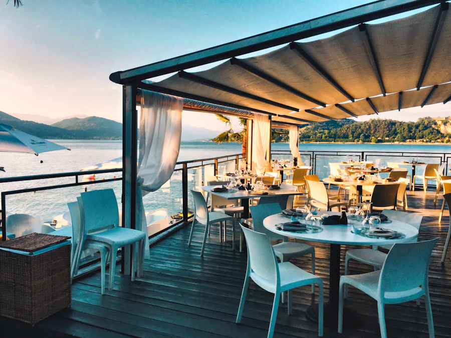
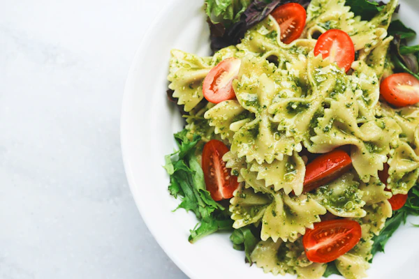
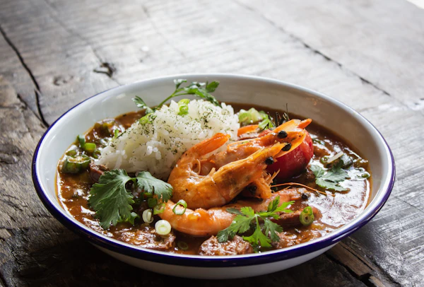
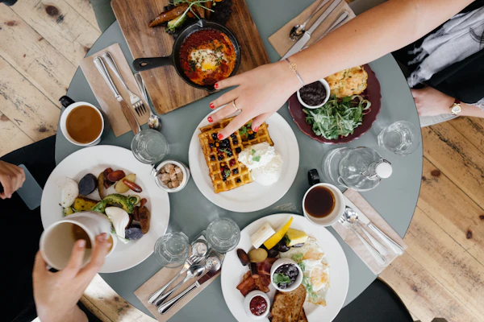
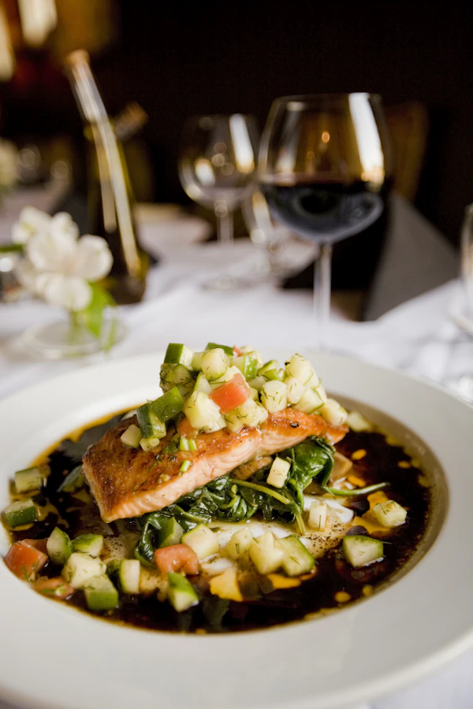
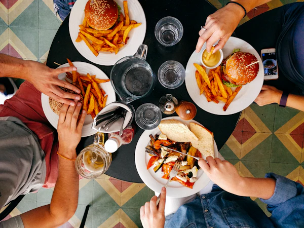

Sabores de Vanguardia, un Festival Unico
Vive una experiencia gourmet con chefs invitados, catas premium y cocina de autor.
Reservar EntradasVive una experiencia gourmet con chefs invitados, catas premium y cocina de autor.
Reservar Entradas| Hora | Evento | Chef | Cupo |
|---|---|---|---|
| 10:00 | Degustacion de Autor | Laura Rios | 40 |
| 13:00 | Taller de Maridaje | Juan Solis | 35 |
| 16:00 | Cocina Molecular | Nina Perez | 30 |

Fusion Gourmet une creatividad, tecnica y sabor en un evento de alta cocina. Nuestro objetivo es celebrar la innovacion gastronomica en un ambiente elegante.




